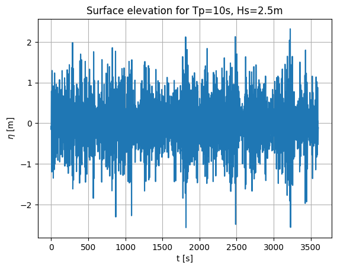
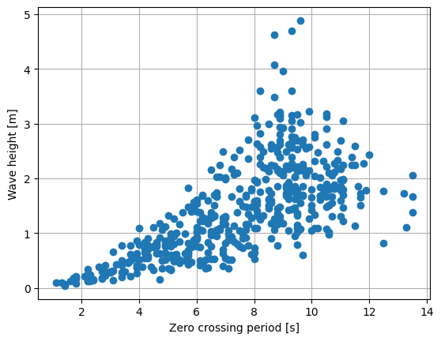
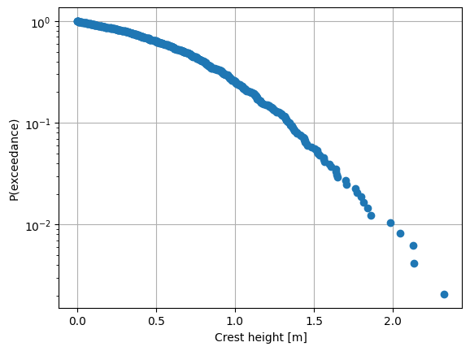

MHKit Upcrossing Analysis Example
The following shows an example of using the upcrossing functionality in the MHKiT Utils module.
This example performs an upcrossing analysis on a surface elevation trace to plot some quantities of interest. Such an upcrossing analysis could be applied to any time domain signal, such as a device response.
[1]:
from mhkit.wave.resource import jonswap_spectrum, surface_elevation
from mhkit.utils import upcrossing, peaks, troughs, heights, periods
import numpy as np
import matplotlib.pyplot as plt
Compute the surface elevation
[2]:
# Peak period and significant wave height
Tp = 10 # s
Hs = 2.5 # m
gamma = 3.3
# Create frequency vector using a return period of 1hr
Tr = 3600 # s
df = 1.0 / Tr # Hz
f = np.arange(0, 1, df)
# Calculate spectrum
spec = jonswap_spectrum(f, Tp, Hs, gamma)
# Calculate surface elevation
fs = 10.0 # Hz
t = np.arange(0, Tr, 1 / fs)
eta = surface_elevation(spec, t)
[3]:
plt.figure()
plt.plot(t, eta)
plt.xlabel("t [s]")
plt.ylabel("$\eta$ [m]")
plt.title(f"Surface elevation for Tp={Tp}s, Hs={Hs}m")
plt.grid()

Plot the individual wave heights and periods
[4]:
heights = heights(t, eta.values.squeeze())
periods = periods(t, eta.values.squeeze())
plt.figure()
plt.plot(periods, heights, "o")
plt.xlabel("Zero crossing period [s]")
plt.ylabel("Wave height [m]")
plt.grid()

Plot the crest probability of exceedance distribution
[5]:
crests = peaks(t, eta.values.squeeze())
crests_sorted = np.sort(crests)
N = crests_sorted.size
# Exceedance probability. Crests are in ascending order
# meaning the first element has P(exceedance) = 1, and
# the final element has P(exceedance) = 1 / N
Q = np.arange(N, 0, -1) / N
plt.figure()
plt.semilogy(crests_sorted, Q, "o")
plt.xlabel("Crest height [m]")
plt.ylabel("P(exceedance)")
plt.grid()
plt.show()
